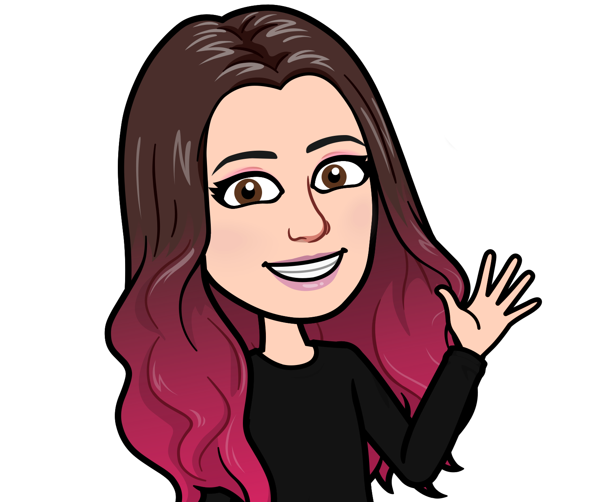

About Me

Besides designing and coding, I love to write, read, play video games, do arts and crafts, imagine Hogwarts is a real place, and they're hiring professors, geek out over new fabric and/or yarn I found, learn new things, and be at home with my family - my husband, our two boys, and our cat.
Fun Facts
- 💻 I first fell in love with design and code in high school when I took Web Design and Digital Design classes.
- 🌸 In case it isn't obvious, my favorite color is pink.
- ☕️ I have to have my cup of coffee every morning.
- 🏰 One of my dreams is to visit all of the Disney parks. So far I've been to the one in Florida and the one in Japan.
- 🦡 I'm a Hufflepuff.
- 💵 I spend way too much money on fabric and yarn.
- 🍽 I love to cook, and my current favorite recipe is Sheet Pan Mac and Cheese.
- 🍋 I'm a sucker for lemon flavored sweets.
- 🎼 I'm a Swiftie.
- 🏡 I'm originally from Florida, but I now live in North Carolina with my family.